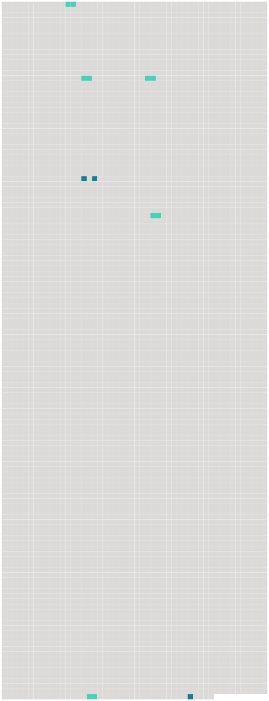

Longueur nb maillons : 8 mentions |
|
Voici ce que nous savons : les hommes ne vivent pas comme [un homme] devrait vivre. [27 phrases] Grâce à une erreur si grossière, à l'âge viril, nous ignorons bien des drames : mais on se met trop tard à nous enfoncer dans la tête les Lois comme des réclames sur la vérole : comment y croire, nous n'y voyons que des chaînes effrayantes pour [un homme] , des chaînes qui nous entaillent la vie. Être [un homme] nous paraît la seule entreprise légitime : nous sommes désespérés en découvrant que tant de beaux devoirs auxquels il fallait nous faire croire dix ans plus tôt ne laissent rien debout dans l'amour de la vie. [33 phrases] Ils étaient vite au chaud, prenant l'humiliation pour la prière, la ruine de l' [homme] pour [sa] sainteté. [12 phrases]
Espérons pour le dernier honneur de [l'homme] que les poètes ne se doutaient de rien. [161 phrases] Tous les aliments qui nourrissent [l'homme] d'une autre manière que les albumines et les hydrates de carbone, tous les détails de [son] régime sont renouvelés. |
 |
Il est possible de télécharger la ressource sur la page Ortolang |
Si vous avez des questions ou vous voyez des erreurs, merci d'envoyer un mail à silvia.federzoni89@gmail.com |